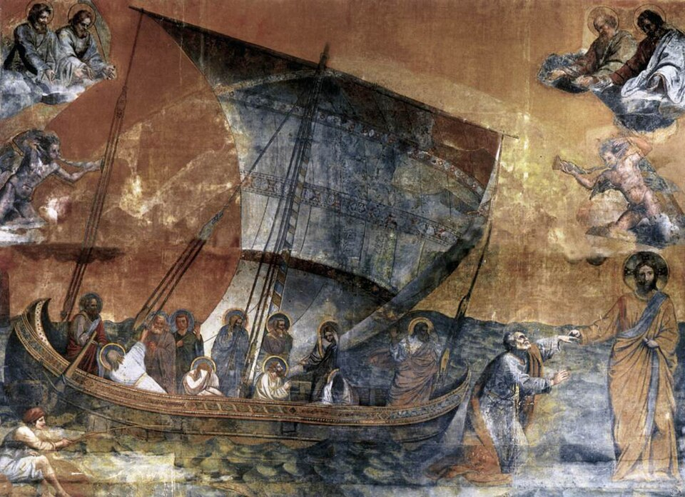
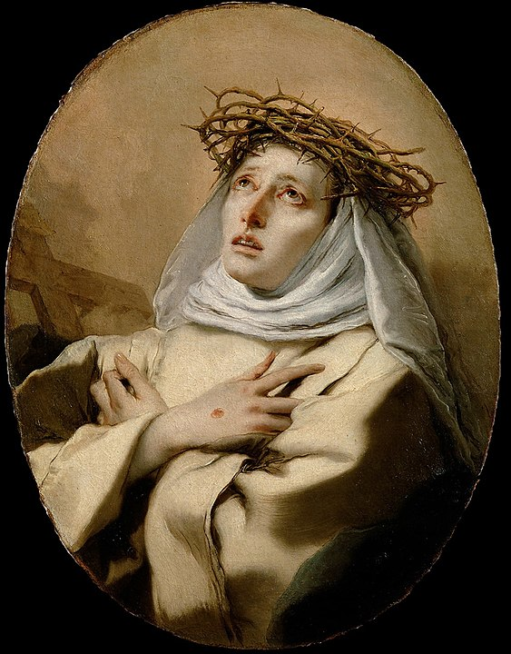

Fragementy Ewangelii o Piotrze i Łodzi
Poniżej przedstawiam fragmenty Ewangelii, które mówią o świętym Piotrze i łodzi. Kryteria wyszukiwania: “łódź” i “Piotr”.
Mt 14,24–33
Pierwszy wymieniony tu fragment opisuje scenę, gdy Jezus chodzi po wodzie:
24 Łódź zaś była już sporo stadiów oddalona od brzegu, miotana falami, bo wiatr był przeciwny. 25 Lecz o czwartej straży nocnej8 przyszedł do nich, krocząc po jeziorze. 26 Uczniowie, zobaczywszy Go kroczącego po jeziorze, zlękli się myśląc, że to zjawa, i ze strachu krzyknęli. 27 Jezus zaraz przemówił do nich: «Odwagi! Ja jestem, nie bójcie się!» 28 Na to odezwał się Piotr: «Panie, jeśli to Ty jesteś, każ mi przyjść do siebie po wodzie!» 29 A On rzekł: «Przyjdź!» Piotr wyszedł z łodzi, i krocząc po wodzie, przyszedł do Jezusa. 30 Lecz na widok silnego wiatru uląkł się i gdy zaczął tonąć, krzyknął: «Panie, ratuj mnie!» 31 Jezus natychmiast wyciągnął rękę i chwycił go, mówiąc: «Czemu zwątpiłeś, małej wiary?» 32 Gdy wsiedli do łodzi, wiatr się uciszył. 33 Ci zaś, którzy byli w łodzi, upadli przed Nim, mówiąc: «Prawdziwie jesteś Synem Bożym».
– Mt 14,24–33

Łk 5:4–11
Obfity połów, Piotr uznaje swoją grzeszność:
4 Gdy przestał mówić, rzekł do Szymona: «Wypłyń na głębię i zarzućcie sieci na połów!». 5 A Szymon odpowiedział: «Mistrzu, całą noc pracowaliśmy i niceśmy nie ułowili. Lecz na Twoje słowo zarzucę sieci». 6 Skoro to uczynili, zagarnęli tak wielkie mnóstwo ryb, że sieci ich zaczynały się rwać. 7 Skinęli więc na wspólników w drugiej łodzi, żeby im przyszli z pomocą. Ci podpłynęli; i napełnili obie łodzie, tak że się prawie zanurzały. 8 Widząc to Szymon Piotr przypadł Jezusowi do kolan i rzekł: «Odejdź ode mnie, Panie, bo jestem człowiek grzeszny». 9 I jego bowiem, i wszystkich jego towarzyszy w zdumienie wprawił połów ryb, jakiego dokonali; 10 jak również Jakuba i Jana, synów Zebedeusza, którzy byli wspólnikami Szymona. Lecz Jezus rzekł do Szymona: «Nie bój się, odtąd ludzi będziesz łowił». 11 I przyciągnąwszy łodzie do brzegu, zostawili wszystko i poszli za Nim.
– Łk 5:4–11

Jn 21:3
Na koniec scena zamykająca Ewangelie, “Zmartwychwstały ukazuje się nad Jeziorem Galilejskim”:
3 Szymon Piotr powiedział do nich: «Idę łowić ryby». Odpowiedzieli mu: «Idziemy i my z tobą». Wyszli więc i wsiedli do łodzi, ale tej nocy nic nie złowili. 4 A gdy ranek zaświtał, Jezus stanął na brzegu. Jednakże uczniowie nie wiedzieli, że to był Jezus. 5 A Jezus rzekł do nich: «Dzieci, czy macie co na posiłek?» Odpowiedzieli Mu: «Nie». 6 On rzekł do nich: «Zarzućcie sieć po prawej stronie łodzi, a znajdziecie». Zarzucili więc i z powodu mnóstwa ryb nie mogli jej wyciągnąć. 7 Powiedział więc do Piotra ów uczeń, którego Jezus miłował2: «To jest Pan!» Szymon Piotr usłyszawszy, że to jest Pan, przywdział na siebie wierzchnią szatę - był bowiem prawie nagi - i rzucił się w morze. 8 Reszta uczniów dobiła łodzią, ciągnąc za sobą sieć z rybami. Od brzegu bowiem nie było daleko - tylko około dwustu łokci.
– J 21,3-8
W każdym z tych fragmentów to sam Jezus rozwiązuje problemy Apostołów, z którymi sami nie dawali sobie rady.
- O autorze
- Ks. Tomasz Włodarczyk
- © 2025 Ks. Tomasz Włodarczyk. All rights reserved.
- Picture: Lorenzo Veneziano, Christ Rescuing Peter from Drowning, Public domain, via Wikimedia Commons.

{kind=link}